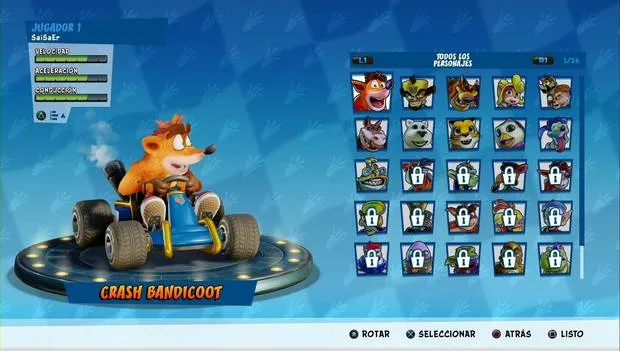

Descripción del Juego
"Crash Team Racing" (CTR) es un clásico juego de carreras que ha dejado una huella indeleble en la historia de los videojuegos. Desarrollado por Naughty Dog y lanzado en 1999, el juego sigue siendo querido por su jugabilidad adictiva y personajes carismáticos.
En CTR, los jugadores compiten en una serie de emocionantes carreras a través de diversas pistas llenas de giros, saltos y obstáculos. Con un toque distintivo gracias al universo de Crash Bandicoot, el juego ofrece diversión tanto para jugadores casuales como para aquellos que buscan desafíos más intensos.
Modos de Juego
CTR ofrece una variedad de modos para mantener a los jugadores entretenidos:
- Carrera: Compite en carreras emocionantes con la meta de llegar en primer lugar.
- Aventura: Embárcate en una aventura para derrotar al malvado Nitros Oxide y salvar la Tierra a través de desafíos y enfrentamientos.
- Combate: Participa en intensas batallas de arena donde la estrategia y la habilidad con los power-ups son clave.
Personajes Jugables
La selección de personajes en CTR es diversa y llena de carisma. Desde el héroe titular, Crash Bandicoot, hasta personajes como Dr. Neo Cortex y Pura, cada corredor tiene su propio estilo y habilidades únicas.

Pistas Memorables
Las pistas en CTR son una parte fundamental de la experiencia. Desde la clásica "Crash Cove" hasta la desafiante "Oxide Station", cada pista presenta su propio conjunto de desafíos y sorpresas. Los jugadores deben dominar las curvas y utilizar power-ups estratégicamente para alcanzar la victoria.
Banda Sonora Inolvidable
La banda sonora de CTR, compuesta por Mark Mothersbaugh, contribuye significativamente a la atmósfera del juego. Desde las melodías emocionantes durante las carreras hasta las pistas relajadas en el modo de aventura, la música eleva la experiencia del jugador y se ha convertido en una parte icónica del juego.